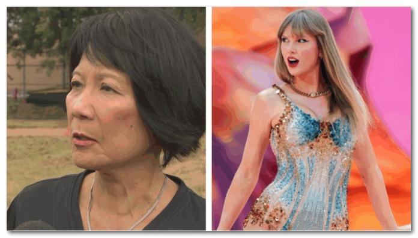

美国天后泰勒·斯威夫特(Taylor Swift)原定本周在维也纳举行3场演唱会，主办单位周三晚间宣布，政府确认体育场发生袭击计划后演唱会被取消，奥地利总理卡尔内哈默表示“悲剧得以避免”。
Barracuda.music 在Instagram 上发文表示：“政府官员确认恩斯特哈佩尔体育场计划发生恐怖袭击，为了大家的安全，我们别无选择，只能取消原定的三场演出。”Barracuda.music指，所有门票将自动退款。
公共安全总监鲁夫在周三晚间的新闻发布会上表示，奥地利警方周三拘留了两名涉嫌策划袭击音乐会的人。鲁夫表示：“在我们的调查过程中，注意到这名19 岁嫌疑人特别关注泰勒丝的维也纳音乐会，我们确定他‘准备行动’”他补充说，这名嫌疑人是奥地利公民，已宣誓效忠伊斯兰国。
另外两名分别为 17 岁和 15 岁的奥地利年轻人因涉嫌策划袭击事件于周三被拘留。根据奥地利隐私法规，嫌疑人的身份尚未公开。警方称，17 岁的嫌疑人最近受雇于一家在演唱会场地提供未指明服务的公司。
警方搜查了19岁嫌疑人在下奥地利州特尔尼茨的住所，发现爆炸装置和雷管、化学品、砍刀和技术设备等。他于7月25日辞职，告诉人们他有“大计划”。
奥地利总理卡尔·内哈默表示：“主谋已承认，他原计划与两名同伙实施自杀式袭击。”
邹至蕙：对多伦多安全有信心
霉霉即将于11月在多伦多举行演唱会。在奥地利的演唱会被取消后，多伦多市长邹至蕙(Olivia Chow)表示，她有信心这座城市将是安全的。
周四，在一个无关的新闻发布会上，当被问及泰勒·斯威夫特11月在多伦多的六晚演唱会门票全部售罄，以及她是否对维也纳袭击未遂事件感到担忧时，市长做出了上述评论。
“我很高兴他们能够逮捕这些人。我知道多伦多警方和其他机构一直在定期开会，以确保每个来参加泰勒·斯威夫特演唱会的人都是安全的。”
泰勒·斯威夫特将于11月14日在Rogers Centre开始她在多伦多的巡演，邹至蕙表示这座城市已经准备好了。
“离Rogers Centre来多伦多还有不到100天的时间，我有充分的信心，我们所有的安全人员，无论是联邦还是当地的，都会保证每个人的安全。我一点也不担心。也不会取消演出，因为斯威夫特的粉丝们会非常失望的。”
霉霉没有公开对取消演唱会发表评论。
YUAN，图片：CP24